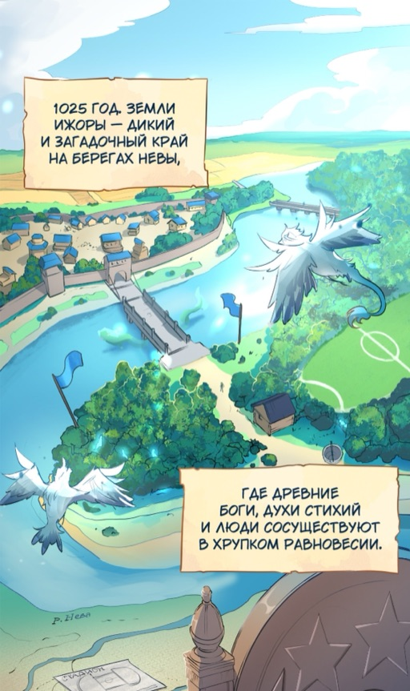

хроники ижоры
- клиент
- ФК Зенит, Яндекс
- год
- 2025
- отрасль
- спорт, медиа
- направления
- atl
задача
сделать к юбилею клуба медийный проект с широким охватом
идея
история Зенита как фэнтезийная сага с собственной мифологией и отсылками для фанатов
как сделали
- 01лор
придумали мир и героев, написали сценарии
- 02вебтун
48 страниц комикса о дружине героев-магов
- 03мультфильм
две части по семь минут — мир вебтуна в движении и с озвучкой
- 04аудиокнига
полчаса расширенной истории
- 05прокат
сагу выпустили на Кинопоиске и в сервисах Яндекс Плюс



результат
646Кохвата на площадках
8 500взаимодействий
топЯндекс Книг — вебтун встал в один ряд с лучшими проектами сервиса